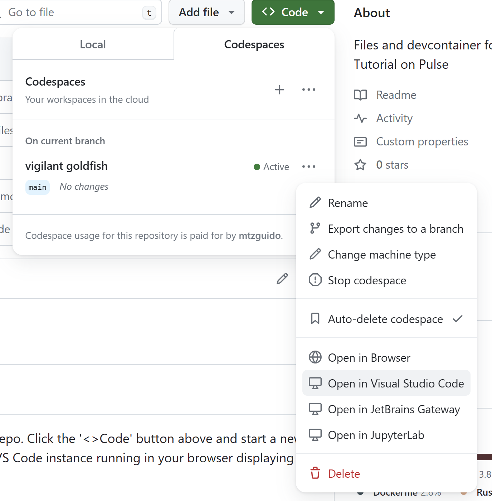

Codespaces でのセットアップ手順
Pulse を実行する主な方法は 3 つあります。以下では概ね難易度の低い順に紹介します。
最も簡単なのは GitHub Codespaces を使う方法です。ワンクリックで、F* と Pulse が設定済みの フル機能の IDE（VS Code）をブラウザ上で起動できます。
また、GitHub に依存しない形で、ローカルのコンテナ内で Pulse を動かすこともできます。これもほぼワンクリックでセットアップできます。
最後に、Pulse のリリース tarball を展開して、バイナリを直接あなたの環境で実行する方法もあります。
（ソースからのビルドは、まだ十分にドキュメント化されていません。）
注釈
本チュートリアルの純粋な F* の部分と異なり、Pulse のコードは現時点ではオンライン・プレイグラウンドで動作しません。以下のいずれかの方法を用いて、このパートのサンプルを試してください。
各章に対応するソースファイルは、このフォルダ にある PulseTutorial.*.fst という名前のファイル群にまとまっています。
GitHub Codespace の作成
まず このリポジトリ にアクセスし、「<>Code」ボタンをクリックして「Create codespace on main」を選びます。これにより、.devcontainer ディレクトリの Dev Container 定義が使用され、F* と Pulse を再現可能に実行できるコンテナ環境がセットアップされます。

1～2 分ほどで、ブラウザ上の VS Code インスタンスが立ち上がり、この README が表示されるはずです。


通常の F* のナビゲーション機能は、Pulse のファイルでもそのまま使えます。
ブラウザではなくローカルの UI を使いたい場合は、ローカルにインストールした VS Code から Codespace を開くこともできます。
この場合も F* と Pulse は GitHub のサーバ上で動作するため使用量は加算されますが、UI はより快適に感じられるでしょう。
Dev Container をローカルで実行する
Dev Container の設定には、Pulse を分離された再現可能な環境で動かすために必要なものがすべて含まれています。Codespaces を使わずローカルのみで動作させたい場合は、VS Code がローカルに Dev Container を簡単に構築してくれます。
VS Code でリポジトリを開くだけです。プロジェクトに Dev Container がある旨のポップアップが表示されるので、「Reopen in Dev Container」を選択するとコンテナのビルドが始まります。VS Code は新しいウィンドウでベースの Docker イメージを取得し、必要な拡張をセットアップして、リポジトリを再度開きます。
以降はこの新しいウィンドウで通常通り作業できます。
Pulse リリース版の利用
Pulse のリリース（関連する F* ツールを含む）は こちら から入手できます。アーカイブを展開し、README.md の指示（特に推奨される環境変数の設定）に従ってください。
あわせて VS Code と、VS Code Marketplace から fstar-vscode-assistant のインストールを推奨します。PATH に設定された F* と Pulse のインストールを自動的に検出してくれます。